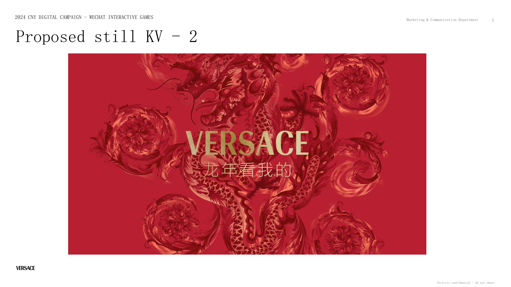
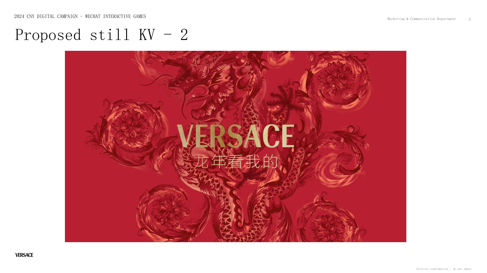
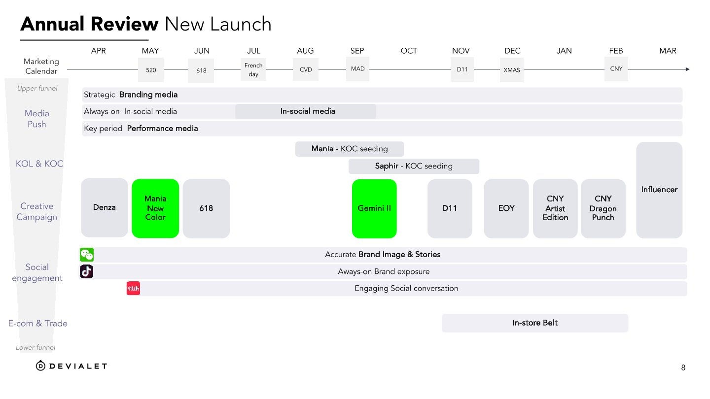
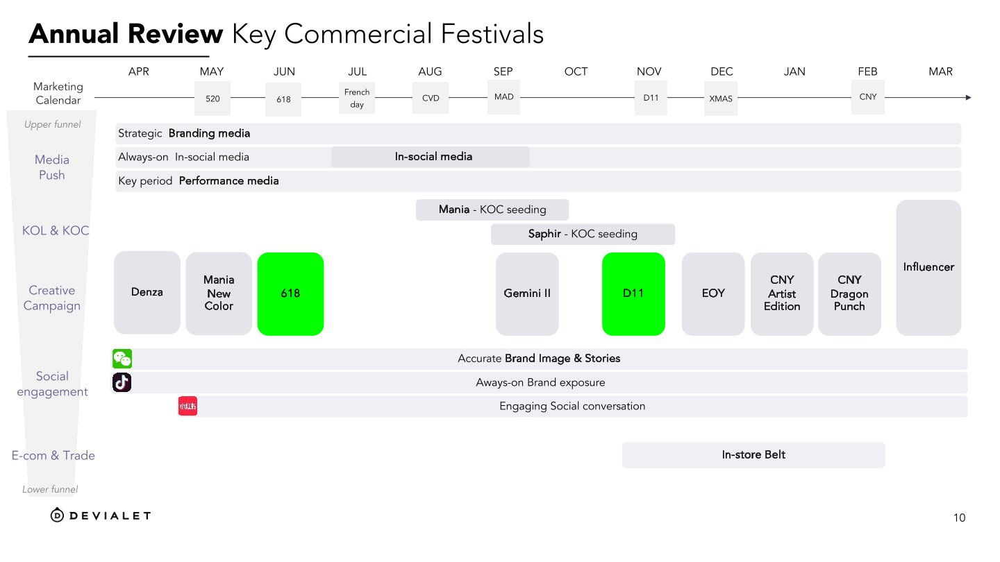
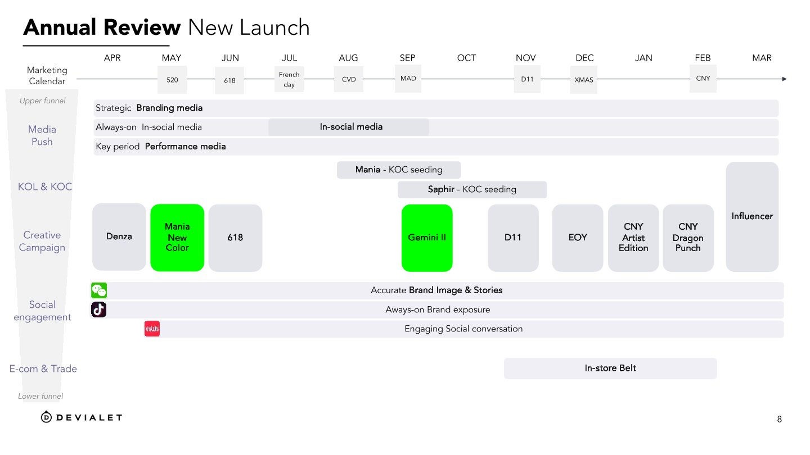
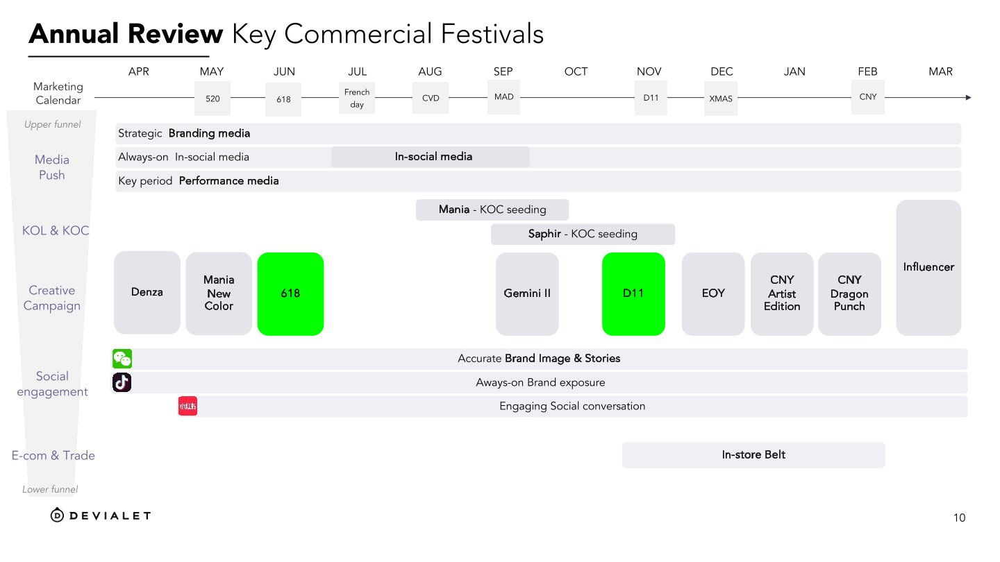
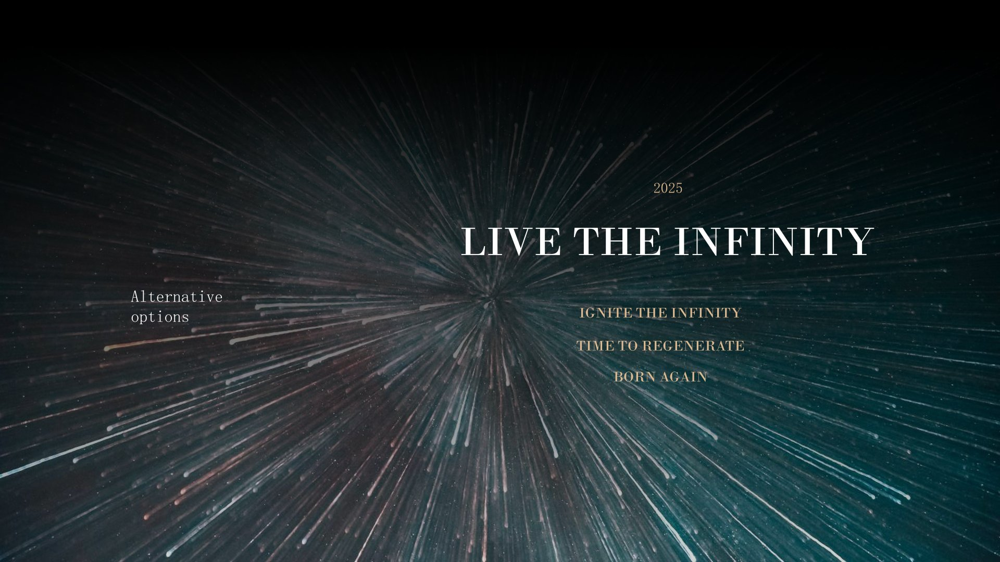
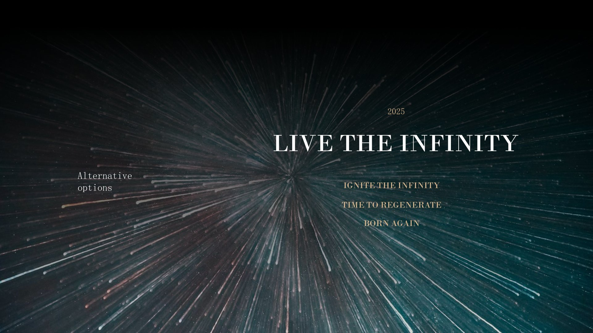

Work Experience
HKUST Smart Campus Initiative (Guangzhou, China)
2025.5 - 2025.7Developer
System Architecture & Development
- Architected and led the development of the HKUST Smart Campus Mini Program, an end-to-end platform for real-time energy monitoring.
- Implemented a dynamic, multi-chart visualization dashboard using ECharts, enabling customizable data analysis and reporting.
Core Features & Technical Leadership
- Developed core functional modules including a real-time alarm center and SSO user authentication, translating complex requirements into robust technical solutions.
- Established and managed an agile development workflow on GitHub, overseeing code quality through feature branching, pull requests, and issue tracking.
HiDream.ai (Shanghai,China)
2024.6-2024.9AI Product Manager Intern
Model Optimization
Utilized deep learning frameworks in PyTorch to train generative models for the localized cross-border e-commerce product HiDream.Integrated text, image, and video data for multimodal data fusion. Improved image generation quality, video smoothness, model comprehension, and content accuracy.
User Growth
Designed and integrated AI redrawing, AI similarity drawing, and de-noising features through competitive analysis and user demand research.Achieved daily active creation user growth of 10,000+/month. Optimized content display formats and validated market strategies using A/B testing. Increased user browsing time by 25% year-on-year and 30-day user retention rate by 38.8%.
ByteDance (Shanghai,China)
2024.3-2024.6Algorithm Product Manager Intern
Algorithm Optimization
Served the 3C category using Naive Bayes models and multivariate regression analysis for dynamic pricing strategy optimization.Monitored real-time user behavior data (e.g., purchase history, browsing patterns). Identified key drivers of promotional activities through data mining techniques. Achieved a 76% increase in average daily ROI for brands.
User Growth
Collaborated with 38 top merchants.Developed user profiles using K-means clustering analysis and machine learning algorithms to identify potential high-value user groups. Designed and implemented a personalized recommendation system, increasing conversion rates by 35% and driving brand sales growth.Continuously iterated operational strategies through user feedback and behavioral data analysis.
ByteDance (Shanghai,China)
2023.12-2024.3Business Analysis Intern
Data Visualization
Developed B-end fee rate strategies for the 3C digital category. Utilized regression analysis, time series forecasting, and decision tree models to analyze merchant operations, dynamic sales, and GMV share.Provided timely improvement suggestions. Identified sales pain points through predictive modeling, resulting in a 60% year-on-year decrease in high-rate fees.
User Research
Combined qualitative (industry reports, macro/meso-level enterprise research) and quantitative research methods (user interviews, surveys) to collect user feedback and understand customer needs. Built dynamic data dashboards using Aeolus, Power BI, and Tableau for real-time sales metric monitoring. Drove a 413% year-on-year GMV growth for related brands.
Little Voice (Shanghai, China)
2023.9 - 2023.12User Operations Intern
Flow Matrix
Build a diversified flow matrix through Xiaohongshu & Tiktok live broadcasting, develop standardized user activation SOPs, effectively guide flow to private domains to improve user retention rate by 30%.
User Growth
Plan IP positioning, build SOP for course selling and paid consultation, optimize content strategy through A/B testing, optimize user experience, achieve user growth of 10% per month and turnover of 8w+.
Yukuaidi (Shanghai, China)
2023.9 - 2023.12Brand Creative Intern
Brand Planning
Responsible for the China social media of luxury women's clothing Loro Piana, 3C audio Devialet and perfume brand Caron, successfully output 200+ content with an average readership of 20,000+. View Full Devialet Report (PDF)
Holiday Marketing
Based on market research and analysis, planning the Chinese New Year marketing campaigns for Versace and Helena Rubinstein, achieving a 30% increase in brand awareness and a 25% increase in user engagement. View Full Versace CNY Proposal (PDF)
Placement Optimization
Analyzed client Devialet's monthly social media data and collaborated on the brand's content operation strategy for 2024, resulting in a 40% increase in social media interaction rate. View Full Devialet Social Media Report (PDF)

 


 



Bluefocus (Beijing, China)
2023.5 - 2023.9Marketing Intern
Content Planning
Develop and implement content strategy on dual micro-platforms for luxury agent Yingtong Group (covering 50+ brands such as Van Cleef & Arpels, Versace, Coach, etc.), boost content readership by 3k+. View Full HR CNY Proposal (PDF)
Placement Optimization
Monitor the effect of advertisement placement, analyze key indicators, through data-driven strategy adjustment, the average monthly exposure reached 80k+ times, exceeding target achievement rate by 130%.
 
